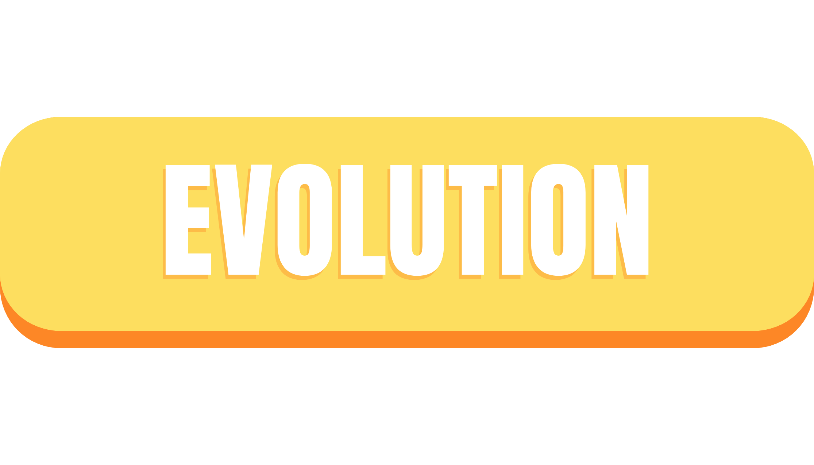
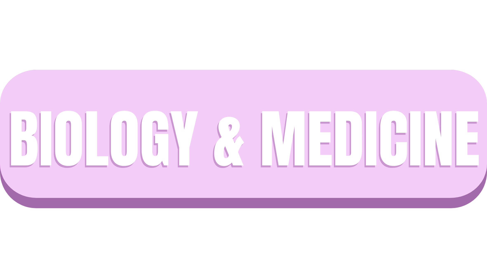

Explore the wonders of our cosmos. Our fantastic exhibition, ‘The Sky
Above Us’, explores the night sky and what we can see and know about
the universe around us. We’ll locate the various constellations and
galaxies that can be seen and learn a bit about the early navigators
who used the stars to travel by. Follow the journey of our solar
exploration: from early Arab traders, to Galileo’s telescope, to the
latest exploration of the planets in our solar system.

For centuries, philosophers and scientists have wrestled with the
question of our origins. Where do we come from and how did we get
here? Since Darwin proposed his theory of evolution we have had a
framework for exploring and understanding our place in this world.
Discover the origins of life on this planet and how the species we
know today have evolved our time. You can also take some time to meet
a few of the creatures who didn’t survive, including our Woolly
Mammoth, the Dodos, and a number of dinosaurs too.

From micro-organisms to the human body, major breakthroughs in biology
are offering us unique insights into the great wonders of the tiny
world. For many people their life expectancy is much longer and their
quality of life much improved, thanks to the growth of our
understanding of medicine. Over a series of exhibits we explore the
history of medicine and take a look at some major breakthroughs
including the discovery of penicillin and the first heart transplant.
Many of our great medicinal discoveries have come not only from the
lab, but also from observing animals in the wild. Often our fellow
creatures have beat us to it.
The information revolution is here and robotics and artificial
intelligence are the science of the future. From useful home
applications of AI to industrial uses of robotics, the future is here.
You can even say hello and shake the hand of Rob the Robot.
As we learn more and more of the impact humans are having on the
planet, the more important it becomes that scientists explore how to
create a sustainable future not just for humans but for the whole
planet. In our ecology section of the museum, we unpack the dangers we
currently face including global warming, extinction of species, and
pollution. But we also focus on the positive ways we can all
contribute to a brighter future.